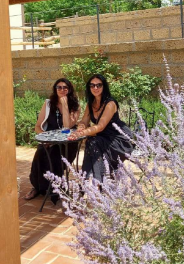
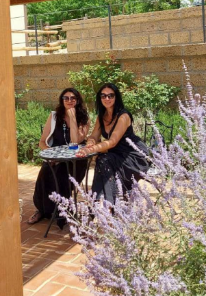

"РОЖДЕСТВО
В иТАЛИИ"
Авторский гастротур
в Италию
О нас
 



Нас зовут
Людмила и Жанна
Частичку моего сердца украла горячая,
страстная страна Италия, я посвятила себя
ей,
я ее
попробовала. Там я научилась любить
то, что я делаю. Кулинарный блогер,
обучалась у поваров
Мишлен, учу
готовить
по итальянским рецептам
Моя сестра Жанна, которая прожила
в Италии больше 20-ти лет и знает
о ней все, ну или почти все
Программа
День 1
Время прилета — вторая половина дня. Встреча в аэропорту Рима. И сразу отправляемся в наше Рождественское увлекательное путешествие. На берегу озера Больсена, в маленьком рыбацком городке Марта, ужин в рыбном ресторане. Рыба любимая всеми папами — знаменитые угри «по-бизентински». После ужина, счастливые и довольные мы едем заселяться на виллу.
День 2
Сбор в гостинице в 9.30 Чивита-ди-Баньореджо — исчезающий город мираж на высоком скалистом холме в центре бесплодной долины Valle dei Calanchi. Фантастический пейзаж дополняет парящий в воздухе мост. Обед в аутентичном ресторане, где даже в погребе есть водопад, а восхитительные виды в вашем бокале, оставят теплые воспоминания. После мы с вами будем забываться о суете будней и утопать в красоте панорамных видов на прекрасное озеро Больсена, в городке Монтефиасконе. Дальше посещение винодельни, вино которой хранится в пещерах. Также винодельня может похвастаться оливковым маслом отличного качества. Пробуем? Конечно! Дигустация вина, масла, брускетты. Вы должны уметь ПОЗВОЛИТЬ СЕБЕ эту роскошь: никуда не спешить и неторопливо отдыхать, ужинать медленно и неспешно с баклом вина. Ужин где мы будем пробовать блюда традиционной Витербской кухни. Счастливые и сытые едем в гостиницу.
День 3
В 10.00 утра сбор в гостинице. Мы едем к буйволам! На ферму, где молодая пара профессионально, с любовью, занимается их разведением. А пейзажи там какие! Тут же и производство сыров из буйволиного молока. Смотрим процесс сыроделания, дегустируем, идем на экскурсию по ферме. Словом ферма, это даже и не назовешь, там пейзажи, амбары, маслодельня, музей и ресторан, где мы будем обедать. Далее мы отправимся в роскошное место, где кардинал Гамбара развлекался после охоты. Следующее место, сыграло в истории папства главную роль. «Город пап» — Витербо открывает своё каменное сердце тому, кто готов погрузиться в его средневековую атмосферу, напоминающую о благородных рыцарях, прекрасных дамах, звону мечей и макиавеллиевской политике римских пап. И тут своими глазами вы увидите то место, где когда-то состоялся самый долгий конклав истории папства. Прогулка по городу. Этот день, обязательно, должен закончится в месте, где запах пиццы, радость вина, вкус сыра и прошутто дополнят эмоции этого дня. Ужин. Венчает наш ужин десерт со смыслом «Поднимите меня к облакам»! Второй день подошел к концу, мы сытые и счастливые едем в отель.
День 4
Сбор в гостинице в 9.00. В этот день мы с вами будем пить вино и учиться на мастер-классе. Агритуризмо Parco delle Guerce — место с историей, гастрономическое украшение этого региона. Тут вы почувствуете вкус и силу семьи. Шеф ресторана поделится с вами знаниями: расскажет свои фишки в приготовлении пасты, соуса, тирамису. Все что сделаем, тем и будем обедать. Представьте: вы в Италии сидите под виноградной лозой в приятной компании с бутылочкой вина из ближайшей винодельни и, конечно, сыыыыыр! Посещение сыродельни. Посещение магазина, закупка ваших гастроизысков домой. Ужин. И этот день тоже подошел к концу.
День 5
Сбор в гостинице в 8.00 Мы с вами отправимся на тихую, но азартную охоту, охоту на трюфель. Мы будем искать "золото" Италии. Охота проходит в живописном ландшафте исторической области. Главное действующие лицо — собака, которая находит трюфели по запаху, даже если они растут на большой глубине. Найденый трюфель сначала откапывает собака, а затем охотник осторожно достает его из земли. То, что найдем, то для нас и приготовят. Дальше мы отправимся на обед с лучшими молочными продуктами. Это потрясающие уникальные сыры без консервантов. Настало время прощального рождественского ужина! Поднимем бокалы за приближение Рождества, чуда и исполнения желаний для каждого из вас В ночь с 16 на 17 декабря в 2 ночи мы выезжаем в аэропорт. Увы наш гастротур подошел к концу, пришло время обниматься и прощаться.
Фото


 1.png)
 1.png)

Цена
12 декабря — 17 декабря
1600€
В цену входит

Проживание
Питание
и дегустации

Трансфер
В цену НЕ входит

Перелет туда и обратно

Виза

Медицинская страховка